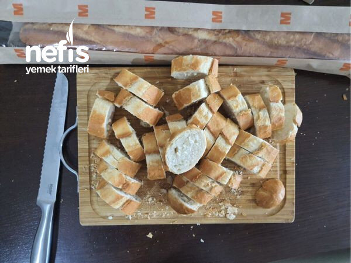

🍽️ 6-8 kişilik⏱️ Hazırlık: 30 dk🔥 Pişirme: 15 dk🏷️ Aperatifler
Malzemeler
- Baget ekmek
- 400 gr kültür mantarı
- 2 yemek kaşığı tereyağı
- 1 büyük boy soğan
- 2 yemek kaşığı zeytinyağı
- 2 yemek kaşığı nar ekşisi
- 1 yemek kaşığı şeker
- Rendelenmiş kaşar
- Tuz
- Baharat
Hazırlanışı
- Mantarlar temizlenip, doğranır ve tavada eriyen tereyağına atılır. Bir yandan ayrı bir tavaya piyazlık yarım ay şeklinde doğranan soğana tuz eklenerek zeytinyağına atılır.
- Soğanlar pembeleşince üzerine nar ekşisi ve şeker eklenerek karamelize olması sağlanır. Sonrasında pişen mantarlar soğana eklenerek birkaç dakika daha karıştırılarak altı kapatılır.
- Bir yandan baget ekmek ince ince doğranır. Yağlı kağıt serilmiş fırın tepsisine dizilir.
- Bir kaseye zeytinyağı konularak üzerine arzuya göre baharat ve tuz eklenir. Ben tuz, nane, kekik, toz biber ve biberiye ekledim.
- Fırçayla baget ekmeklere sürülerek fırına verilir. Ekmekler kızarınca tavadaki karışım ekmeklerin üzerine konur.
- Kaşar rendesi de üstüne eklenip fırına verilir. Kaşar eriyince servise hazırdır.